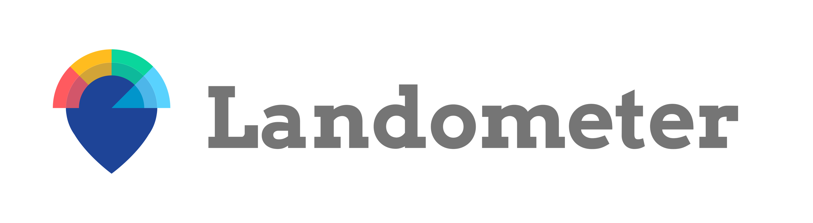
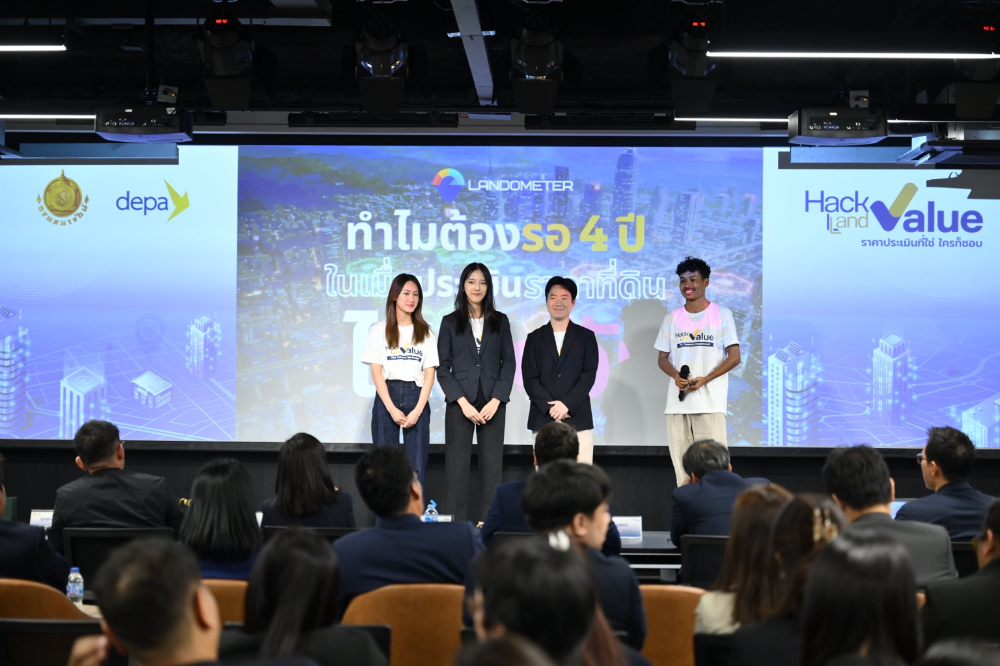

Who
เราเลือกช่วยใคร และเขาต้องการอะไร
คนและองค์กรที่ต้องตัดสินใจเกี่ยวกับพื้นที่จริง ซึ่งกระทบเงิน เวลา ความเสี่ยง ชุมชน หรืออนาคตของเมือง พวกเขาต้องการหลักฐานที่มองเห็นและเปรียบเทียบได้ และความมั่นใจว่าการตัดสินใจอธิบายและทบทวนได้

New joiner field guideNew joiner · ใช้เวลาประมาณ 5 นาที
Master Brand Brief เก็บคำตอบระดับ Landometer · Product Brief ตกลงคำตอบของหนึ่งผลิตภัณฑ์ · Product Statement ย่อสิ่งที่ตกลงแล้วให้คนอื่นเข้าใจตรงกัน
Visualize City, Shape Tomorrow.

01 · คำถามเดียวกัน คนละระดับ
สี่คำนี้ไม่ใช่เอกสารสี่ฉบับ และคำตอบระดับ Landometer ใช้แทนคำตอบของผลิตภัณฑ์หนึ่งตัวไม่ได้
เราเลือกช่วยใคร และเขาต้องการอะไร
คนและองค์กรที่ต้องตัดสินใจเกี่ยวกับพื้นที่จริง ซึ่งกระทบเงิน เวลา ความเสี่ยง ชุมชน หรืออนาคตของเมือง พวกเขาต้องการหลักฐานที่มองเห็นและเปรียบเทียบได้ และความมั่นใจว่าการตัดสินใจอธิบายและทบทวนได้
ผู้ใช้ต้องได้ความก้าวหน้าอะไร
เปลี่ยนข้อมูลเมืองที่กระจัดกระจายให้เป็นความเข้าใจเชิงพื้นที่ที่มีแหล่งที่มา เพื่อให้ผู้ใช้เห็น เข้าใจ เปรียบเทียบ ตัดสินใจ ลงมือทำ และเรียนรู้จากผลลัพธ์
ผู้ใช้มีทางเลือกอะไร และเราตั้งมาตรฐานเทียบกับใคร
แยกวิธีเดิม ทางเลือกตรงของแต่ละผลิตภัณฑ์ และ aspiring benchmarks ที่ใช้ตั้ง quality bar ด้านความน่าเชื่อถือ ความง่ายในการใช้ intelligence และ workflow โดยไม่เรียกทุก benchmark ว่าคู่แข่งตรง
เราจะชนะในกรอบ Which ด้วยอะไร
ชนะด้วยฐานข้อมูลเมืองไทยที่เชื่อม Land · Location · Living, spatial intelligence ที่คนไม่ใช้ GIS ก็เข้าใจได้, visual-first explanation, grounded AI ที่แสดง source และ limitation และ action & learning loop ที่มีหลักฐานรองรับ
จำสั้น ๆ: Who ต้องการ What — Which กำหนดทางเลือกและ quality bar — How คือวิธีชนะ Product Statement ไม่ใช่ระดับที่สาม แต่เป็นวิธีเล่าคำตอบระดับผลิตภัณฑ์ให้สั้นลง
Landometer is the decision-intelligence layer between raw urban data and real local action.
กรอบคำถามในหน้านี้ใช้ Master Brand Brief และคำยืนยันของ Brand Owner วันที่ 6 สิงหาคม 2026 ส่วน [POSITION-01] ใน Design System v0.8.8 ยังใช้ framing เดิมและต้องอัปเดตตามภายหลัง
02 · เอกสาร 3 ฉบับ
ถ้าจำได้เพียงอย่างเดียว ให้จำว่าเรากำลังตัดสินเรื่องทั้งบริษัท หนึ่งผลิตภัณฑ์ หรือกำลังอธิบายสิ่งที่ตกลงแล้ว
กำหนดทิศของทั้ง Landometer — purpose, promise, portfolio, ความสามารถร่วม และสิ่งที่พูดในนามแบรนด์ได้
ตกลงความจริงของหนึ่งผลิตภัณฑ์ — ผู้ใช้และความต้องการ ผลลัพธ์ ทางเลือกและ quality bar วิธีชนะ ข้อมูล ขอบเขต และวิธีวัดผล
พูดความจริงนั้นให้สั้น — คำอธิบาย 1–3 ประโยคจากแหล่งความจริงระดับผลิตภัณฑ์ที่อนุมัติแล้ว
ทั้ง LandometerMaster Brand Brief
หนึ่งผลิตภัณฑ์Product Brief
หนึ่งคำอธิบายProduct Statement
03 · เลือกจากงานที่อยู่ตรงหน้า
เลือกสถานการณ์หนึ่งข้อ แล้วดูว่าควรเปิดเอกสารไหน เหตุผลคืออะไร และทำอะไรต่อ
เพราะทีมกำลังตัดสินว่าใครต้องได้ผลลัพธ์อะไร จะเทียบกับทางเลือกและ quality bar ใด และจะชนะอย่างไร
ระวัง: อย่าเริ่มจากตั้ง tagline แล้วค่อยย้อนหาว่า product ทำได้จริงหรือไม่
04 · ตัวอย่างเดียว เห็นครบ
ทีมพัฒนาธุรกิจมีทำเล 30 แห่ง และต้องเลือก 3 แห่งที่ควรลงพื้นที่ตรวจต่อ
ตัวอย่างเพื่อสอน · ไม่ใช่ Product Statement ที่อนุมัติแล้วProduct Brief · ตกลงให้ครบ
ทีมพัฒนาธุรกิจต้องคัด 30 ทำเลก่อนลงพื้นที่ และต้องมั่นใจว่าอธิบาย shortlist ต่อผู้บริหารได้ ผู้บริหารการลงทุนเป็นผู้อนุมัติ ไม่ใช่ผู้ใช้หลัก
ได้ shortlist 3 ทำเลที่ควรลงพื้นที่ต่อ พร้อมเหตุผล หลักฐาน และข้อมูลที่ยังต้องตรวจ
วิธีเดิมคือ spreadsheet, map และรายงานคนละฐาน; GIS/consultant เป็นทางเลือกตรง ส่วน Google Maps และ Placer.ai ใช้ตั้ง quality bar เฉพาะด้าน
ชนะด้วยเกณฑ์ ขอบเขตพื้นที่ และข้อมูลรุ่นเดียวกันทั้ง 30 ทำเล พร้อมแสดง source สัญญาณที่เห็นต่าง ข้อมูลที่ขาด และข้อจำกัด
ขอบเขต: ใช้ประกอบการตัดสินใจ ไม่อนุมัติการลงทุนแทนคน และไม่รับประกันยอดขาย
Product Statement · เล่าให้สั้น
เครื่องมือคัดกรองทำเลช่วย ทีมพัฒนาธุรกิจ คัด 30 ทำเลให้เหลือ 3 ทำเลที่ควรลงพื้นที่ต่อ โดยใช้เกณฑ์ ขอบเขตพื้นที่ และข้อมูลรุ่นเดียวกันกับทุกทำเล พร้อมแสดงเหตุผล หลักฐาน และข้อมูลที่ยังต้องตรวจ ผลลัพธ์ใช้ประกอบการตัดสินใจ ไม่ใช่คำอนุมัติลงทุนหรือการรับประกันยอดขาย
ประโยคสั้นนี้ไม่ยกทางเลือกและ quality bar มาพูด จึงเก็บ Which ไว้ใน Product Brief ส่วน Landing page, sales deck และ campaign จะเพิ่ม Which ได้เมื่อช่วยการตัดสินใจและมีหลักฐานรองรับ
ใช้ Master Brand Brief ตัดสินว่าเรื่องใดพูดในนาม Landometer ได้
ใช้ Product Brief เพื่อให้เข้าใจผู้ใช้ ข้อมูล ขอบเขต หลักฐาน และสิ่งที่ผลิตภัณฑ์ไม่ทำตรงกัน
ตรวจ requirement กับ Product Brief ไม่ใช้ข้อความสื่อสารเป็น specification
เริ่มจาก Product Statement แล้วเปิด Product Brief เมื่อต้องอธิบายผู้ใช้ หลักฐาน วิธีทำงาน หรือข้อจำกัดเพิ่ม
05 · เปิดต้นทาง ไม่เดาจากความจำ
แยกเอกสารที่กำกับงานปัจจุบันออกจากตัวอย่างการใช้งาน และบอกตรง ๆ เมื่อยังไม่มีลิงก์ฉบับหลัก
กรอบ Who · What · Which · How ในหน้านี้ได้รับการยืนยันจาก Brand Owner แล้ว แต่ยังไม่มีลิงก์ public ของ brief ฉบับหลัก ให้ถาม Brand Owner ก่อนเปลี่ยนคำตอบระดับบริษัท
แต่ละผลิตภัณฑ์ต้องยืนยันฉบับที่มีผลใช้งานกับ Product Owner ไม่ควรเดาจากหน้าเว็บหรือ deck รุ่นเก่า
Living reference ปัจจุบันสำหรับ visual, voice, evidence boundary และการนำความจริงไปสื่อสาร; [POSITION-01] ยังรอปรับ framing ให้ตรงกับ brief ปัจจุบัน
เปิด ↗ Markdown sourceDesign System v0.8.8 · .mdไฟล์อ่านและค้นหาได้โดยตรง ใช้ดู [POSITION-01] และกฎต้นทางตามเลขข้อ
อ่าน ↗ Product-brief-derived exampleCityMETER explainerตัวอย่างหน้าอธิบายที่จัดโครงจาก Product Brief v6 ไม่ใช่ตัว Product Brief และไม่ใช้แทนฉบับหลัก
ดูตัวอย่าง ↗ Published contextภาพรวมผลิตภัณฑ์ Landometerใช้ดูคำอธิบายที่เผยแพร่แล้วและบริบทของพอร์ต ต้องตรวจสถานะปัจจุบันก่อนนำข้อความไปใช้ต่อ
เปิด ↗ Live productCityMETERดูผลิตภัณฑ์ที่เปิดใช้งานจริง แยก capability ปัจจุบันออกจากตัวอย่างหรือ roadmap
ลองใช้ ↗ Companion guideคู่มือเวอร์ชัน Markdownใช้ค้นข้อความ คัดลอก checklist และอ่านโดยไม่ต้องใช้ interaction
อ่าน ↗Onboarding 260111, Brand Visual Guidelines 2025, Landometer Introduction 250606, Location · Location · Location และ GTM Explore · Execute · Elevate ช่วยตรวจที่มาและความหมาย แต่ไม่ได้เป็น canonical Master Brand Brief หรือ Product Brief และไม่ได้ถูกคัดลอกไป public Pages โดยอัตโนมัติ
เอกสารที่หน้านี้ยังเข้าถึงไม่ครบระบุไว้ด้านบน หน้านี้ไม่เก็บข้อมูลผู้ใช้ และจะเปิดลิงก์ภายนอกเมื่อคุณกดเท่านั้น
สรุปก่อนเริ่มงาน
ใช้ทิศเดียวกัน ตกลงความจริงให้ชัด แล้วอธิบายให้คนอื่นเข้าใจตรงกัน